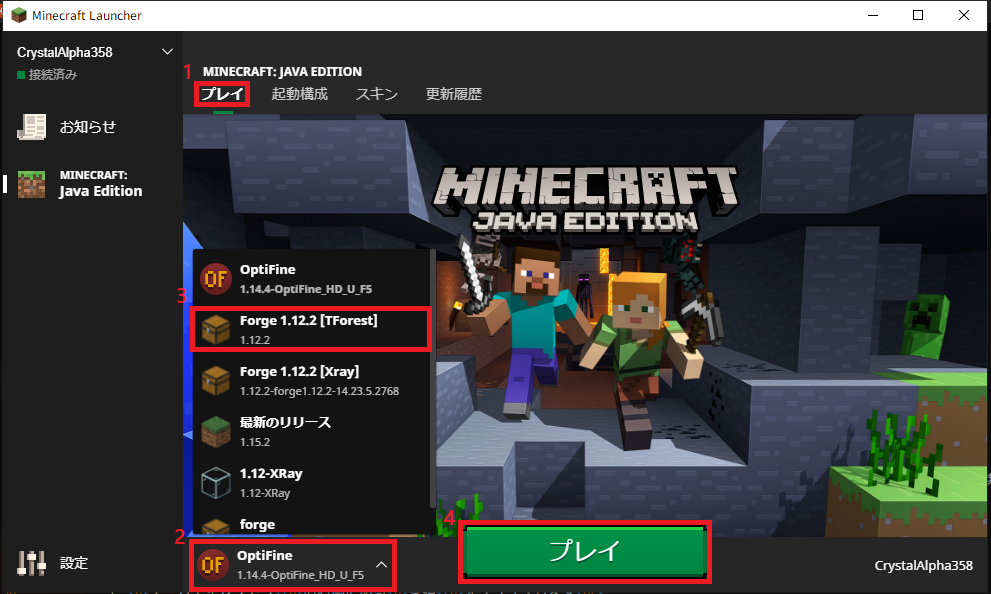

1. エクスプローラーを開きます
2. ウィンドウ上側の表示をクリックします
3. ファイル名拡張子と隠しファイルの表示チェックボックスにチェックを入れます
1. Minecraft Launcherを起動します
デスクトップにない場合はスタートメニュー→M→Minecraft Launcher→Minecraft Launcherから起動できます。
(下の画像で上にあるMinecraftは統合版なので間違えないように)
2. 起動構成タブ→新規作成の順にクリックします
3. 名前に区別しやすい任意の名前を入力します
4. バージョンをrelease 1.12.2にします
5. ゲームディレクトリの右側にある参照をクリックします
6. (PCのユーザー名)→AppData→Roamingの順に進み、左下の新しいフォルダーの作成をクリックします
7. 区別しやすい任意のフォルダー名を入力します 例: .minecraft-tforest
8. OKをクリックします
9. 保存をクリックしてプロファイルを保存します
10. プレイタブ→プレイボタンの左にあるプロファイルセレクタをクリックし、設定した名前のプロファイルを選択します
11. プレイボタンをクリックして起動します
